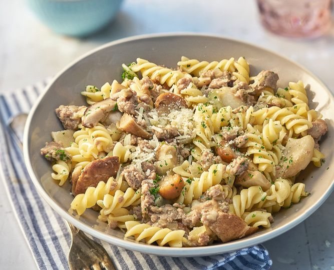

Pasta salciccia
Pasta Salciccia

Ingridients
- 500 g sedani
- 250 g salsiccia Italian sausage
- 2 cloves garlic
- 400 g peeled tomatoes
- 2 tbsp basil chopped
- olive oil extra virgin
- Heat some olive oil in a pan and sauté the whole peeled garlic cloves until translucent. Remove the skin from the salsiccia and cut into bite-sized pieces. Then add to the pan and fry briefly on all sides.
- Deglaze with the peeled tomatoes, season with salt and pepper and simmer gently for 15 minutes. Stir occasionally during this process.
- Meanwhile, cook the sedani in a large pot of salted water until al dente.
- Remove the garlic cloves from the sauce. Then add the chopped basil, stir well and simmer gently. Drain the cooked pasta and add it directly to the sauce. Mix everything thoroughly.
- Pour the pasta with salsiccia into deep plates, garnish with more basil if desired and serve hot.
Buon appetito!